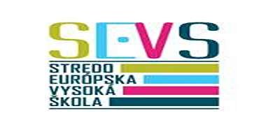
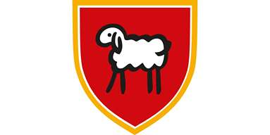

...Per Aspera ad Astra..
Som človek, ktorý má rád zábavu, humor - čim čiernejší tým lepšie, a sarkazmus.
Vždy som miloval literatúru v ktorej som aj súťažil a dejiny, dejiny a hlavne
vojenské sú mojou vášňou, s tým je spojené aj zberateľstvo, hlavne teda faleristika,
ale aj filatelia a numizmatika. Z pasívnych hobby to je ešte modelárstvo, ktoré mi
učarovalo a naučilo ma sústrediť sa na detaily. Techniky z neho som využil pri renovácii
starého nábytku. Opakom tohto je moja láska k cestovaniu a spoznávania nového, či už na
motocykli alebo pešobusom. Pohyb celkovo beriem ako svoju súčasť zakže si rád zahrám
futbal, a ešte radšej zdvíham železá a prekonávam tak sám seba.
Čo samojej povahy týka som zodpovedný a empatický introvert, ktorý sa však naučil
vystupovať aj na verejnosti. Verím že so správnymi ľuďmi je všetko možné, avšak
niektoré veci je nutné absolvovať samostatne. Iprovizácia mi pomohla v živote už
nespočetne krát, aspoň dovtedy, kým so si dané vedomosti čo najskôr neosvojil.
Slabinou, s ktorou bojujem je niekedy prílišná netrpezlivosť.

- Narodený v najlepšom roku; 1988
- Manžel, otec dvoch malých čertíkov
- Gemerské Teplice, miesto ktoré ma formovalo od detstva
- Teplica je ako tvoja sestra, robíte si zle ale nemenili by si

- Maturita v roku 2008
- PRVÉ Slovenské gymnázium (sorry literárne)
- Krásne spomienky na ľudí s ktorými vieš začať tam kde si skončil

- Úspešné štátnice vroku 2013 v odbore Medzinárodné vzťahy
- Skutočná voľnosť, ale aj zodpovednosť
- Špičkový Česko-Slovenský profesori
- Eichler,Laml,
Šmihula,Jaššová,
Hlaváček,Nováčková,
Šír,Juza,
len malý zoznam z mnohých, pod ktorých vedením som mal tú česť
študovať - Škola s potenciálom, ktorá skončila pre mamonárstvo

- Prvé zamestnanie
- Dobrá škola a skúsenosť
- Nezabudnuteľné školenia na skúšky v NBS
- Práca kde som sa naučil, že všetko je o ľuďoch,
po odchode nadriadeného som odišiel tiež

- Od roku 2014 môj exilový domov
- Miesto kde som sa stal otcom
- Príjemné mestečko kde sa pomaly každý pozná

- 2014 - 2016
- Prvá práca v Rakúsku
- Práca v kuchyni so všetkým,čo ktomu patrí
- Moja nemčinárka plakala, zo zdesenia, aj od smiechu,
no naučil som sa impovizovať za pochodu a rozmýšľať
o veciach inak (Malé zelené guľky = hrášok)

- 2018 - 2020
- Technická nemčina, veeeľká sranda, hlavne v kombinácii s dialektom
- Skvelá partia ľudí s ktorými sastále stretávam
- Zas a znova, ťažká práca a nočné môžu byť sranda so správnymi ľuďmi
- Ďalšia škola, aj keď negatívna, v skresľovaní
štatistík a zavretia prevádzky
- 2020 - 2023
- Väčšie prepojenie manuálnych a IT zručností,
pre väčšie zapojenie SAP systémov do procesov výroby - Prvé skúsenosti s riadením menšej skupiny pracovníkov
na nižšej manažérskej úrovni - Veľa správnych ľudí, žiaľ aj jeden nesprávny a ten stačil až až
- Nová výzva o ktorej som už dávno rozmýšľal, ale vždy bolo
niečo dôležitejšie - Java, HTML, CSS, Git a ďalšie pribudnú
- Visual Studio (Top za mňa), IntelliJ IDEA, GitHub, GameMaker Studio

- Zatiaľ pár vecí ktoré som spravil a raz sa na nich asi zasmejem


{kind=link}
{kind=link}
{kind=link}
{kind=link}
{kind=link}